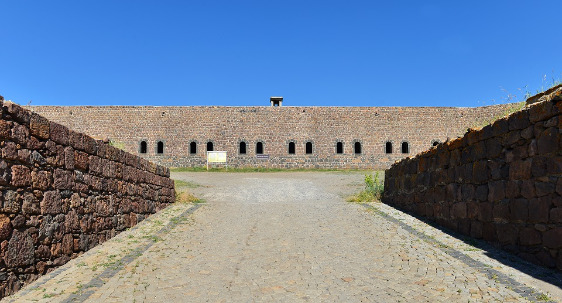
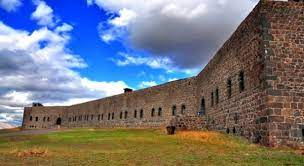
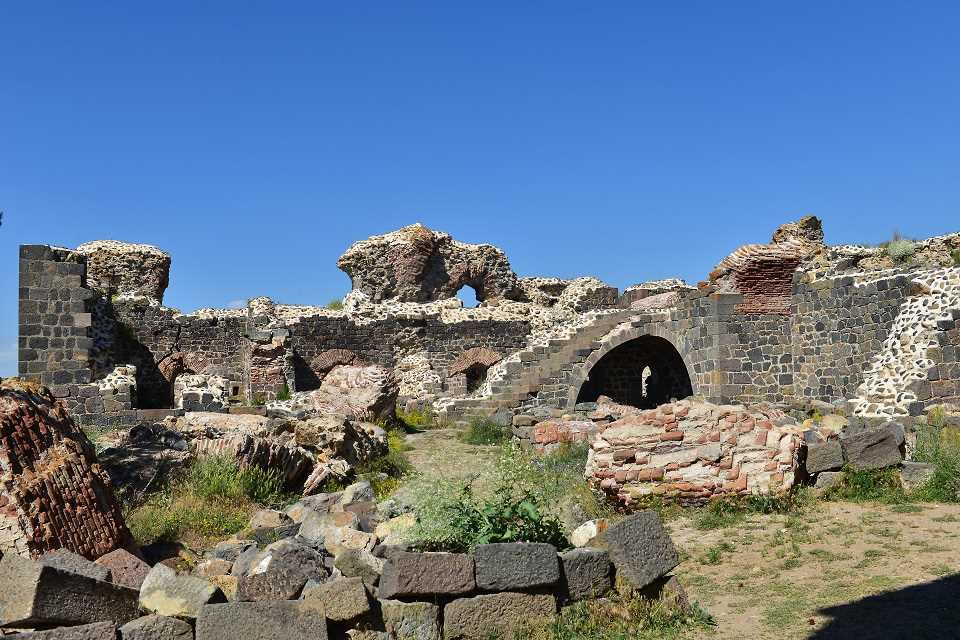

Erzurum'da yapılan ilk tabyaların tarihi 18'inci yüzyıldaki Osmanlı-İran savaşına kadar uzanır. Ancak en büyük tabyalar 19'uncu yüzyılın başından itibaren, Ruslar'ın Doğu Anadolu'ya yaptıkları baskın ve istilalardan şehri korumak amacıyla inşa edilmiştir. Şehrin çevresinde görüş açısı yüksek tepelere inşa edilen bu stratejik yapıların sayısı 22'yi bulmaktadır. İçlerinde karargah binaları, askeri barınaklar, eğitim sahaları, yemekhaneler, sarnıçlar, pusu odaları yer alan bu tabyalar; bazen tek, bazen de bir kaç büyük yapının birleşiminden meydana gelir. Büyüklükleri ve konumları değişen tabyaların en önemlileri şehrin hemen doğusunda bulunan Mecidiye ve Aziziye tabyalarıdır. Tabyaların tamamı taştan inşa edilirken, mimari üsluptan ziyade sağlamlık ve kullanım esasları ön plana çıkartılmıştır. Yan yana odalardan meydana gelen tabyaların, üzerleri kalın bir toprak tabakasıyla örtülmüştür. Düşmanın geleceği yönün öteki tarafında askerlerin toplantı avlularına, depo, revir, gibi bölümlere yer verilmiştir. Tabyaların en geniş bölümünde kışla odaları bulunurken, bunlar birbirleri ile bağlantılı dikdörtgen şekilde inşa edilmiştir. Odaların genişlikleri 3-4 metre derinlikleri 6-14,5 metredir. Çoğunlukla tek katlı olan kışla odalarının bazıları yer kazanmak amacıyla ahşap kalaslarla ikiye bölünmüş ve iki katlı hale getirilmiştir. Bu tabyalar (Mecidiye ve Aziziye) "93 Harbi" olarak bilinen 1877-1878 Osmanlı Rus Savaşı'nda, Rusların ilerleyişinin durdurulmasında kritik bir işlev görmüştür.
  